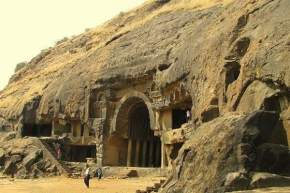

Lonavala-Khandala[1] is a hill station and a Municipal Council in the Pune district, Maharashtra, India. It is about 64 km (40 miles) west of Pune and 96 km (60 miles) to the east of Mumbai. It is known for its production of the hard candy chikki and is also a major stop on the railway line connecting Mumbai and Pune. From the Pune suburbs, local trains are available from Pune Junction. The Mumbai-Pune Expressway and the Mumbai-Bengaluru highway both pass through Lonavala. Lonavala is also home to INS Shivaji (formerly HMIS Shivaji), the Indian Navy's premier technical training institute. On 16 February 1945, the Establishment was commissioned as HMIS Shivaji and since then, the premier Technical Training Establishment of the Indian Navy trains officers.

Present day Lonavala was a part of the Seuna (Yadava) dynasty. Later, the Mughals realised the strategic importance of the region and kept the region for an extended time. The forts in the region and the "Mavala" warriors played an important role in the history of the Maratha Empire and that of the Peshwas. In 1871, the Lonavala and Khandala hill stations were established by Lord Elphinstone, who was the Governor of Bombay Presidency at the time.
Lonavala has an extreme version of tropical wet and dry climate which barely is borderline with a humid subtropical climate (CWa) due to the January mean temperature being shy of 18.9°C. It has an extreme wet and dry climate because it's quite dry during the dry months (mid October to may) while it's extremely wet from June to September. July and August rainfall values are higher than most well known cities annual rainfall.[citation needed]
Lonavala and the adjacent Khandala are twin hill stations 622 metres (2,041 ft) above sea level, in the Sahyadri ranges that demarcate the Deccan Plateau and the Konkan coast. The hill stations sprawl over an approximate area of 38 square kilometres (15 sq mi). Tourism peaks during the monsoon season. The name Lonavala is derived from the words 'leni' which means caves and 'avali' which means series. i.e. 'a series of Caves' which is a reference to the many caves like Karla Caves, Bhaja Caves and Bedsa that are close to Lonavala. A trip to Lonavala and Khandala can be combined with sight-seeing visits of Karla, Bhaja and Bedsa caves and also the two fortresses, Lohagad and Visapur. Another place of interest is the Tungi fort, one of the forts captured by Malik Ahmad near the village of Karjat and was known for its natural strength.[5] The Andharban trek begins from village Pimpri, passes through dense forests, valleys and waterfalls and ends in Bhira.

By road Lonavala is on the Mumbai-Pune Expressway and is well-connected to several towns of Khopoli, Karjat, Talegaon Dabhade, etc. By train Further information: Lonavla railway station Lonavala is well-connected by train. Local trains run from Pune at 2-hour intervals. Those originating from Mumbai along the central line have Khopoli as their last station. Buses are available at regular intervals to complete the remaining 15 km of the journey to Lonavla from Khopoli bus station. It takes 2.5 hours by train from Mumbai and 1 to 1.5 hour from Pune. All trains, travelling between Mumbai and Pune, halt at Lonavala. Before the push-pull technology, trains from Mumbai used to halt at Karjat in Raigad District to attach banker locomotives before the train started the journey up the western ghats to reach Lonavala.[6] By air The city of Aamby Valley, which lies near to Lonavala, has its own private airport. The nearest commercial airports are Pune International Airport at 64 km and Chhatrapati Shivaji Maharaj International Airport at 104 km.[7] A seaplane service is also available between Juhu and Pawana Dam, which is 14 km away from Lonavala.